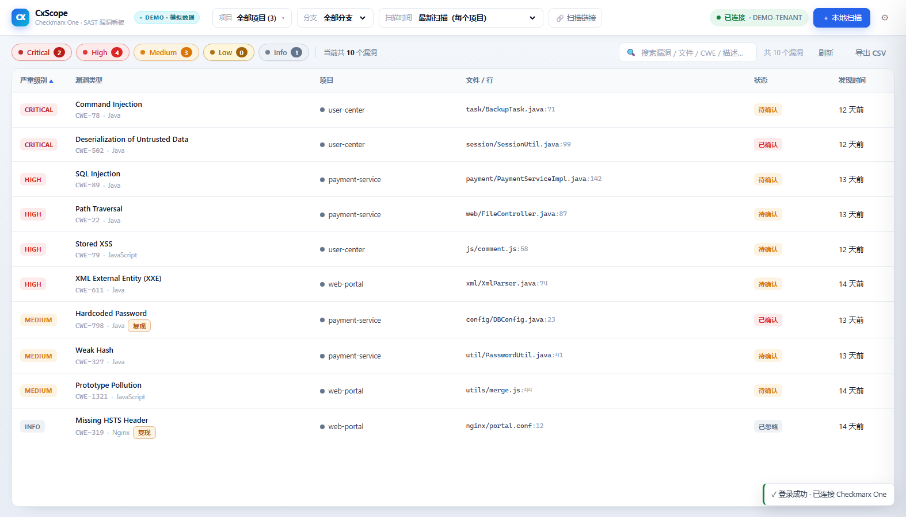

CX
Checkmarx 漏洞看板 · 页面 Demo 合集
最上方是「与正式页面一致」的最新 Demo（无需代理 / API Key）；下方是 3 套早期布局原型，可对比交互形态。

最新 · 与正式页面一致
当前页面版 Demo（模拟数据）
按现在交付的正式页面（Demo 1 布局）构建：项目/分支/扫描时间筛选、严重级别标签、右侧可拖拽详情抽屉、扫描链接直达、本地扫描模拟。所有数据均为本地模拟， 不需要 proxy.py、不需要真实 API Key、不发起网络请求，双击打开即可体验。
- 与正式页面使用同一套代码，仅注入演示 mock 层
- 演示登录（Key 已预填）→ 自动加载 3 个项目 / 10 条最新漏洞
- 抽屉拖拽宽度、无横向滚动、CSV 导出等交互与正式版一致
- 本地扫描会模拟多项目并行进度，并回填结果


三种「漏洞详情」形态对比
攻击向量 / 数据流 / 修复示例 / 参考链接 四种信息在三种容器里的呈现右侧抽屉Demo 1

固定 Inspector 面板Demo 2

居中弹窗Demo 3

怎么玩 / 演示约定
- 最新「当前页面版 Demo」：与正式页面同一套代码构建，登录页已预填演示 API Key，点「登录」后会自动选择演示项目并展示 10 条漏洞；无需 proxy.py、无需真实 Key、不发起网络请求。
- 首次打开是 API Key 登录页（与 IDEA 插件一致，只填 API Key）；演示环境任意内容即可登录，登录成功后自动隐藏登录页。
- 右上角 ⚙ 随时调出连接设置；里面有「退出登录」，可回到登录界面重新体验。
- 点顶部 严重级别标签 / KPI 卡片 可筛选；⌘/Ctrl+Enter 在登录框提交，↑/↓ 切换漏洞，Esc 关闭详情。
- 项目多选：当前页面版顶部「项目」下拉勾选后点「应用」；Demo 1 顶部下拉、Demo 2 左侧项目列表、Demo 3 项目 Tab 也支持多项目。
- 本地扫描：点「＋ 本地扫描」→ 添加多个本地文件夹（每个对应一个 Checkmarx One 项目）→ 开始扫描，可看到多项目并行进度，完成后结果自动进入看板。当前页面版与 Demo 均为模拟流程，不会真的上传源码。
- 所有页面均为纯静态、单文件（截图在
shots/），数据是内置 mock 数据，不会访问 Checkmarx 或任何网络接口。 - 直接带参数打开可复现状态：
#state=board跳过登录、&open=2打开第 3 条漏洞、&modal=scan打开本地扫描弹窗。